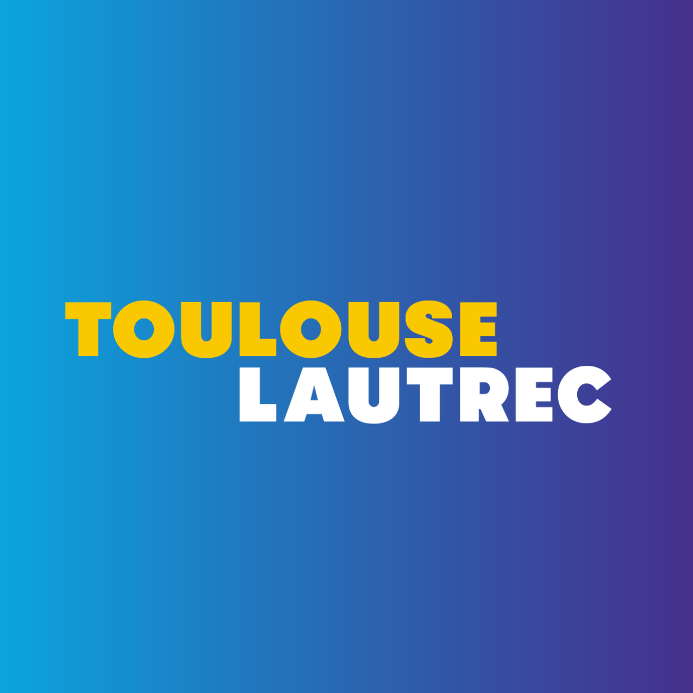

FORMACIÓN ACADÉMICA

Título a Nombre de la Nación en COMUNICACIÓN AUDIOVISUAL MULTIMEDIA. Formado para desarrollar proyectos que integran narrativa, diseño, y nuevas tecnologías.

Dominar el INGLÉS me permite acceder a documentación técnica, colaborar en entornos multi culturales y poder utilizar herramientas y recursos digitales especializados de alcance mundial.